Исследование свойств катушки индуктивности
Опыт 1
Намотаем катушку с немагнитным сердечником. Ее индуктивность настолько мала, что LC - метр (измеритель индуктивности и ёмкости) показывает ноль.
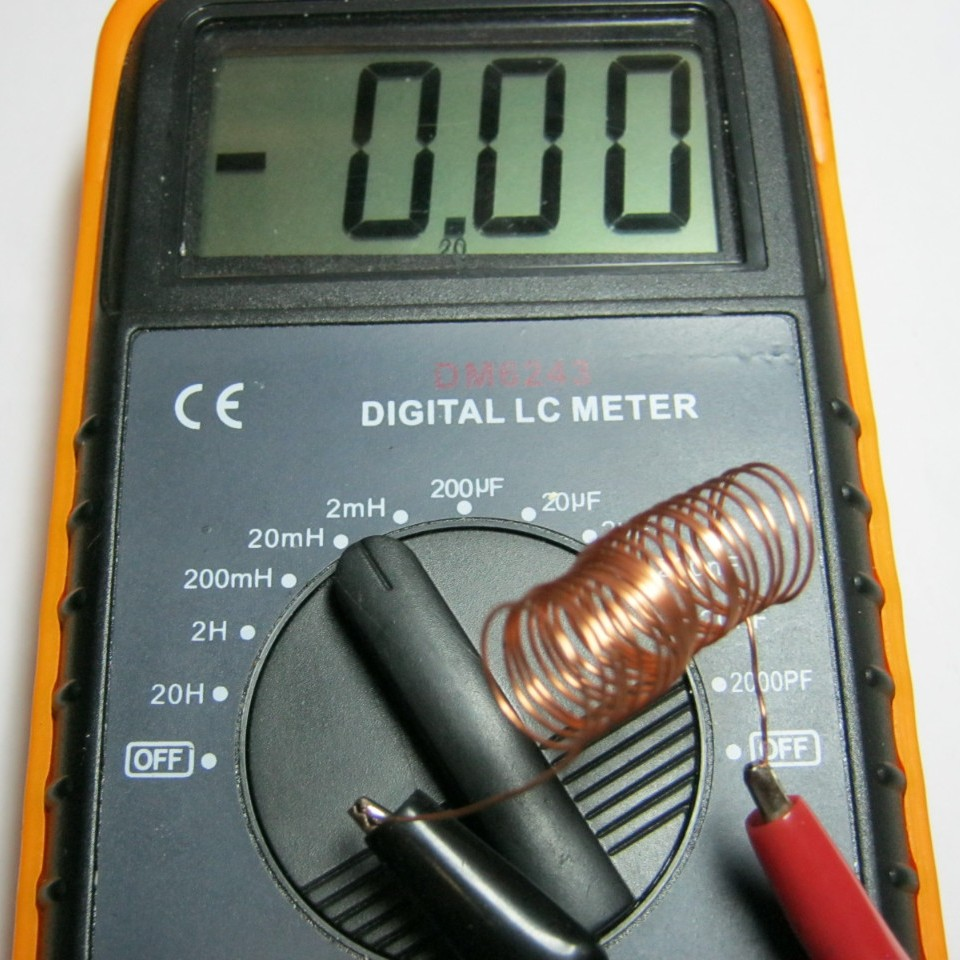
Рис. 1 - Катушка с немагнитным сердечником имеет малую индуктивность
Начинаем вводить катушку в ферритовый сердечник на самый край. LC-метр показывает 21 мГн (микроГенри).
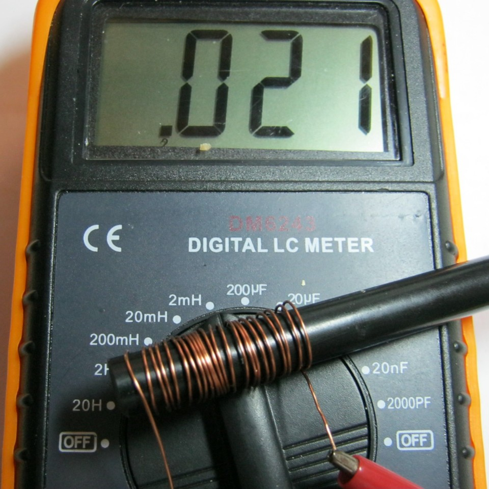
Рис. 2 - Индуктивность катушки на краю ферритового сердечника
Вводим катушку на середину феррита: 35 микроГенри.
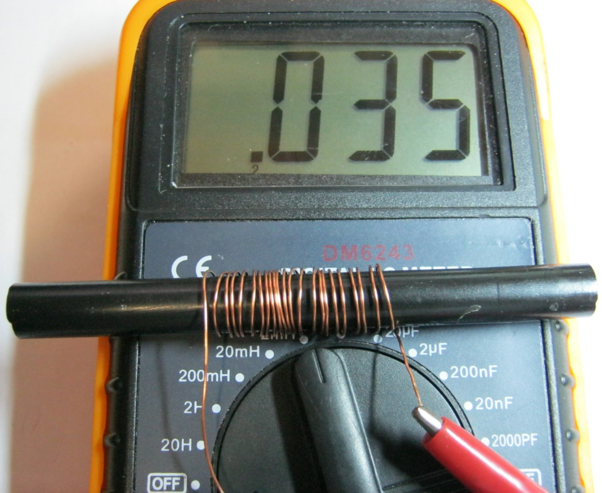
Рис. 10 -
Продолжаем вводить катушку на правый край феррита: 20 микроГенри.
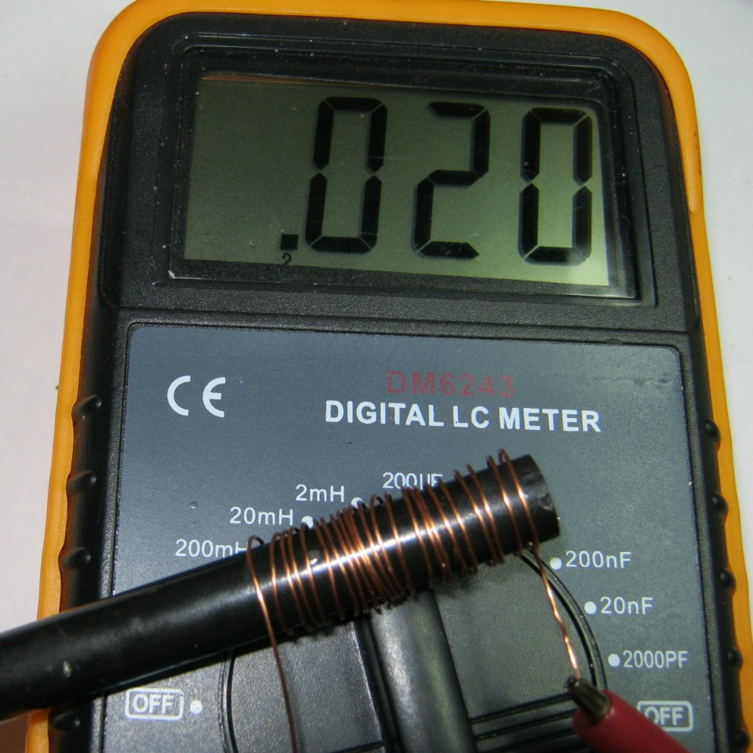
Рис. 11 -
Вывод: самая большая индуктивность на цилиндрическом феррите возникает в его середине. Поэтому, если будете мотать катушку на цилиндрическом сеодечнике, старайтесь мотать в середине феррита. Это свойство используется для плавного изменения индуктивности в переменных катушках индуктивности:
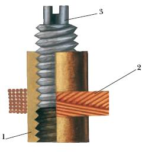
Рис. 12 -
1 - каркас катушки, 2 -витки катушки, 3 - сердечник со шлицом под отвертку.
Вкручивая или выкручивая сердечник изменяем индуктивность катушки.
Опыт 2
Ставим кутушку в середину сердечника и начинаем сжимать витки.
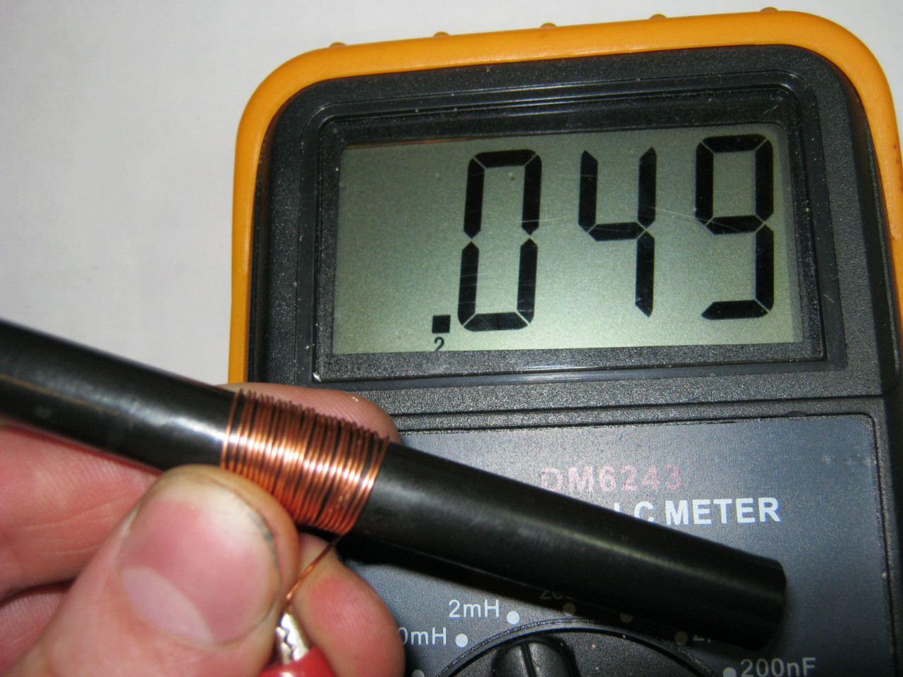
Рис. 13 -
Индуктивность стала почти 50 микроГенри.
Расправим витки по всему ферриту - 13 микроГенри.
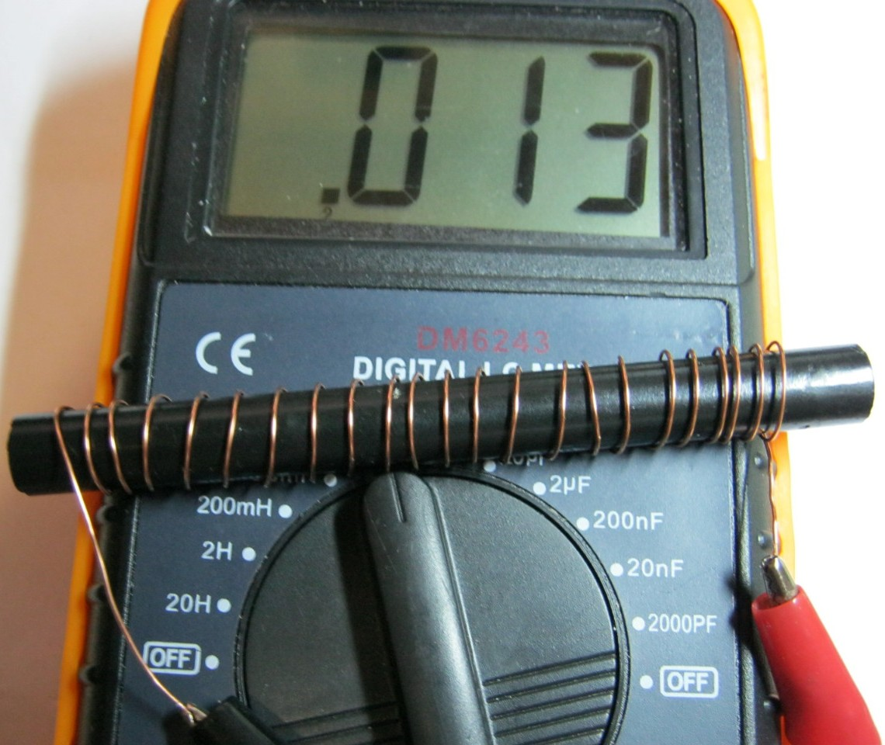
Рис. 14 -
Вывод: для максимальной индуктивности мотать катушку надо "виток к витку".
Опыт 3
Уменьшим количество витков катушки в два раза. Было 24 витка, стало 12.
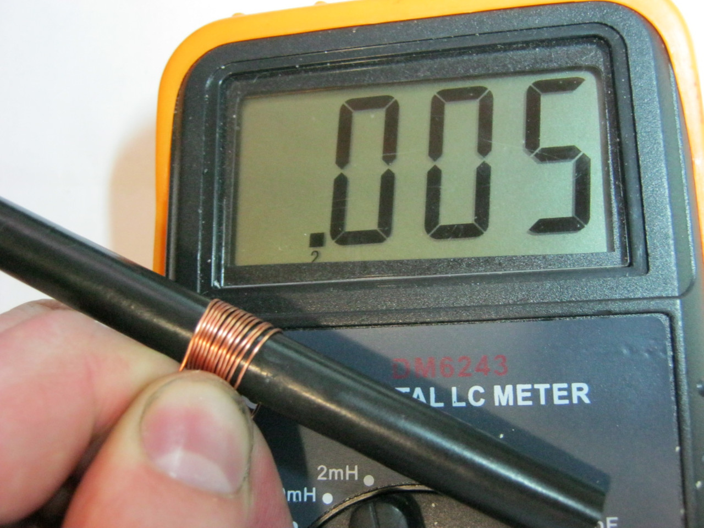
Рис. 15 -
Совсем маленькая индуктивность. Убавили количество витков в 2 раза, индуктивность уменьшилась в 10 раз.
Вывод: чем меньше количество витков - тем меньше индуктивность. Индуктивность меняется не прямолинейно виткам.
Опыт 4
Намотаем катушку из трёх витков на ферритовое кольцо.
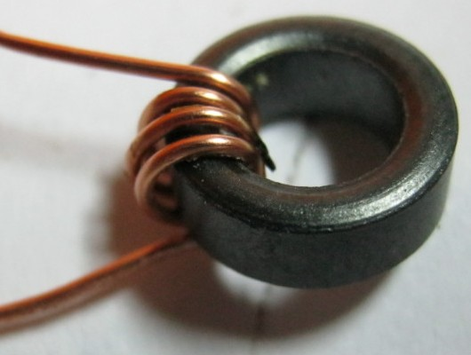
Рис. 16 - Катушка из трёх витков на ферритовом кольце
Измеряем индуктивность - 15 микроГенри.
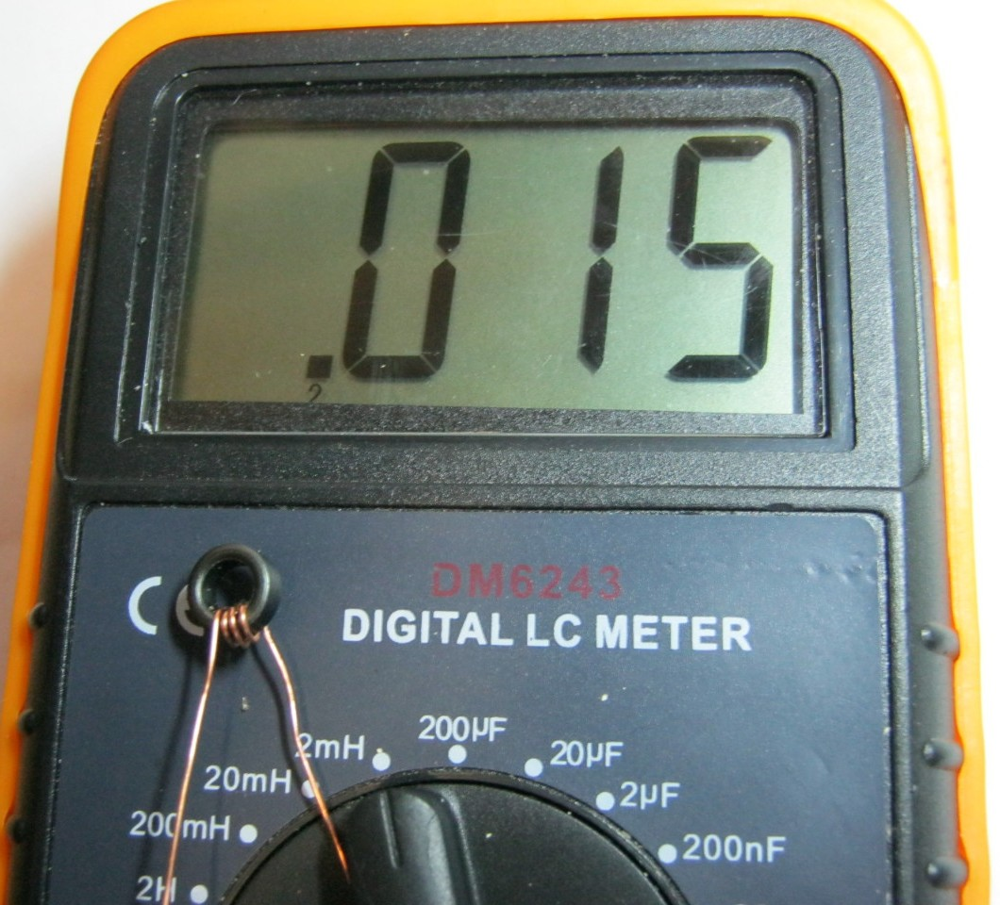
Рис. 17 -
Отдалим витки катушки друг от друга.
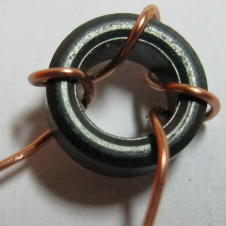
Рис. 18 -
Измеряем снова - 15 микроГенри.
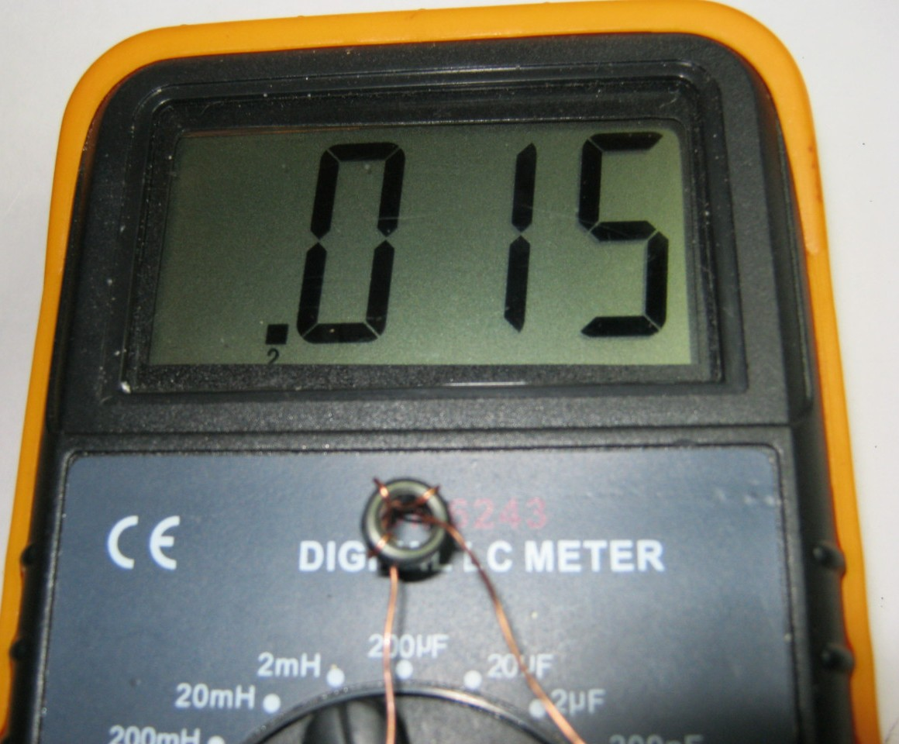
Рис. 19 -
Вывод: расстояние от витка до витка не играет никакой роли катушки индуктивности в тороидальном сердечнике.
Опыт 5
Намотаем на ферритовое кольцов место 3 витков 9 витков.
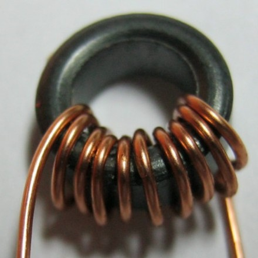
Рис. 20 -
Измеряем индуктивность - 173 микроГенри. Увеличили количество витков в 3 раза, а индуктивность увеличилась в 12 раз.
{kind=link}
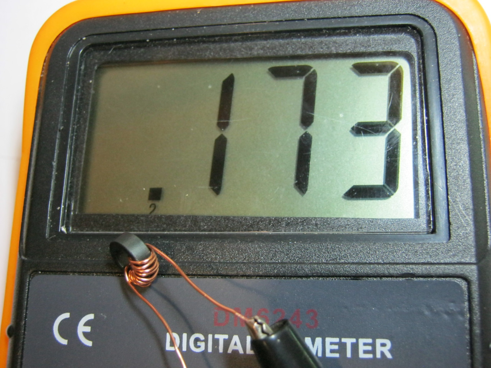
Рис. 21 -
Вывод: индуктивность меняется не прямолинейно виткам.
Индуктивность зависит еще от таких параметров, как сердечник (из какого материала он сделан), площадь поперечного сечения сердечника, длина катушки.